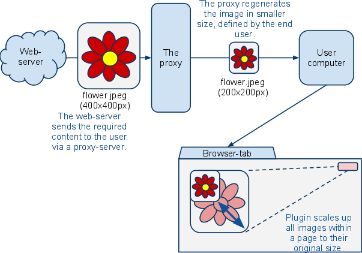
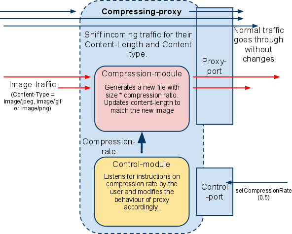
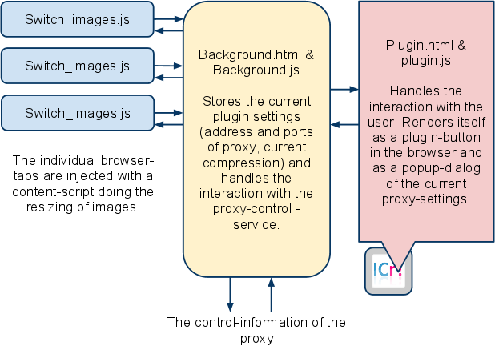
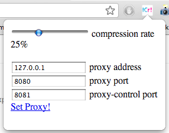
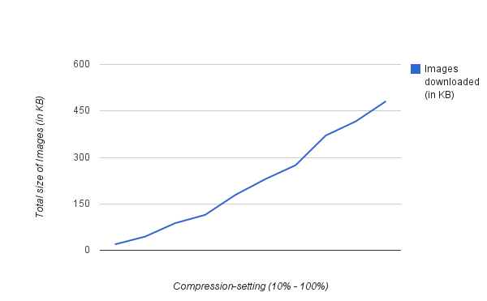

Eetu Korhonen, eeko@iki.fi, http://eeko.iki.fi/
http://github.com/Eeko/resizer_proxy
ImgCompresser! is a proof-of-concept on a combination of two software components, aimed to reduce the bandwidth-costs of common web-surfing with the expense of quality of transferred image-elements within pages. This is done by preprocessing the image-contents of individual http web-page requests within a tailored proxy-server (compressproxy.py) and using a browser-plugin to display the processed images suitably within the page-rendering.
The motivation for this is to look for methods to extend users ability to use public web in situations, when the transfer-amounts become limited. For example, many mobile data-plans have caps or form their pricing by transfer amount. In addition, similar technology can be beneficial on low-bandwidth situations and when transferring data to devices, without the computing- and display resources of traditional web-browsing devices. For example, Opera Mini utilizes a preprocessing-proxy to provide better browsing experiences for dumbphones.
As a personal goal, this project was mainly about introducing myself more towards JavaScript, jQuery and the internals of Google Chrome. And a bit about working with different server back-end technologies (Python 3, Twisted and Python Image Library instead of Ruby, Rails and ImageMagick I have experience of working with before).
As for educational goals, this project is targeted for an average, passing grade. Projects main merits lie in its somewhat novel, ambitious purpose addressing a real-world problem and somewhat wide selection of technologies utilized and studied along the way. Greatest disadvantages are within the lack of real-world usability of current implementation and the lack of other finalizing touches and polish.
Figure 1: Overview of system functionality
The current implementation splits the system in two parts. The first being the Twisted+Python Image Library -powered script running the image-sizing proxy in a remote computer, which should not be so restricted with traffic limitations. The second being a tiny plugin within the browser, which is aware of the [proxied] nature of the connection and can be used to control the behaviour and compression-rate of the proxy.

Figure 2: Overview of compressing proxy and how it handles incoming traffic
The proxy listens the user with two Twisted TCP-listeners defaulting to ports 8080 and 8081. The first one works as the actual HTTP proxy and grabs the outgoing web-page requests and afterwards serves them back to the user after receiving and possibly modifying the content as wanted. Requests flowing out to the public Internet are sent without any modification or inspection, but any reply directed for the requester is screened and modified on two content-headers: Content-type and content-length.
If the packet stream is detected to be of image-file, the proxy captures all traffic related to it and reduces its size with Python Image Librarys .thumbnail(size) -method. The new size is calculated by a simple multiplication of width and height with a float f, (0.0 < f <= 1.0) representing the desired image size as a percentage of the original. For example, an image sized 400x400 pixels with the desired size of 25% would be computed like this:
cr = 0.25 # compress rate. actually a global variable
newimage = oldimage.thumbnail(
int(cr * oldimage.width, cr * oldimage.height))
The compression-rate is actually derived from a global variable, controlled by an external TCP-listening module meant to be administrated by the user via the browser-plugin part. This module listens for incoming HTTP get and post -requests towards a single URI (http://proxyaddress:controlport/control). If it receives a get-request, it sends a simple reply of few characters indicating the current compression rate of the proxy.
# the proxy is listening in this computer at port 8081
proxy:~ eeko$ curl http://localhost:8081/control
> 0.5
# the proxy is compressing images by (0.5 * width , 0.5 * height)
proxy:~ eeko$
In addition, if the program receives a post-request with the desired compression rate to the same address, it replies with an OK-acknowledgement and changes the global variable to the new one. Since the proxy can work independently without the browser-plugin and as the current plugin only supports a few predefined compression settings, the manual adjustments of the proxy is useful for evaluating and testing this bandwidth-conservation-method beyond “default” values.
proxy:~ eeko$ curl http://localhost:8081/control
> 0.5
proxy:~ eeko$ curl -d "new_compression_rate=0.15"
http://localhost:8081/control
> OK
proxy:~ eeko$ curl http://localhost:8081/control
> 0.15
proxy:~ eeko$

Figure 3: The architecture of the Chrome-browser extension
To help rendering the resized images to their original sizes, we use a custom extension to Google Chrome which runs a simple resizing script after all content within the Document Object Model are downloaded. The extension also takes care of configuring the browser to use the specified proxy and handles it’s management via the proxys configuration interface. The components use the jQuery JavaScript-framework extensively to easen up the development.
The resizing is done with a content-script (switch_images.js) injected within each browser-tab and is set to work after the jQuerys simplified rendering condition $(document).ready() is met. That is, the entire DOM is loaded with all of its contents. When this happens, we read all the DOM elements from the list document.images and use [compression-rate] corresponding multiplier to increase the height of given images. E.g. if compression-rate is 0.5, we multiply the height by 2. By default, Chrome resizes the width automatically with the same multiplication. It is to be noted, that the current implementation is quite dumb in its behaviour, since it can’t respond to external modifications or definitions to image sizes (e.g. size and image-position defined in css, xml-attributes or external javascript) or dynamic changes to the DOM.
The state of the plugin is stored in background.html -file, which is being run independently without need to have any content-tabs or control-plugins open. It is basically a few hidden fields containing the current settings of the plugin (compression-rate, address and ports of proxy, is the proxy on or off) and a script-file, containing the essential functions and listeners to manage the interaction between other components of the plugin, the browser (especially the proxy-settings) and the compression-proxy itself.
It is to be noted, that the proxy-settings of the browser are commonly considered out-of-bounds of normal, safe extensions. Because of this, similar, data-flow altering and redirecting plugins use external methods (such as an external component moving between the browser and the OS) to achieve their goals. But in our case, we use Chromes Experimental APIs (chrome.experimental.proxy) and a Beta-version of the browser to keep our solution simple, elegant and within the scope of the course. Due to this solution, we are unable to propagate our plugin via Google Chrome Web Store and the user is required to turn the support for “Experimental Extension APIs” on manually within chrome://flags/. It is also possible, that the support for our technique will be removed or altered in the future releases of the browser.

Figure 4: Image of the plugin UI.
The extension interacts with user by its popup-component. (popup.html) Whenever the popup is invoked or it detects a change in settings (via the modification of the compression-rate slider or form-post to redefine the proxy-address settings), it queries for its current settings from the background-page, which in turn asks for the compression-rate from the proxy itself. If the compression-rate is changed, the new value and change request is sent to the background, which in turn sends the post-request to the proxy server. If the slider is set to 100% compression, it effectively asks the background to mark the “proxy-status” flag to set the proxy off and revert to the system-default proxy settings, instead of overriding them with the compression-proxy.
The proxy-server program and the Chrome-extension were tested and developed within a single laptop-computer running Mac OS X 10.6.7 (2.4 GHz C2D, 2GB of RAM).
The software sources can be downloaded from my Github repository at http://github.com/Eeko/resizer_proxy.
The compressing-proxy requires a working installation of Python and Twisted network-engine running on top of it. In addition, we use Python Imaging Library (PIL) to rescale the images as needed. Please note, that since neither Twisted or PIL yet support Python 3, we need a recent release of Python 2. At the time of writing, the program worked well with Python 2.6.1 r261.
If the required modules are installed and if $ env python refers to a 2.x release of Python, the program can be run simply by giving it an executable-permissions and running it on command-line like this:
proxy:Compress_proxy eeko$ ./compressproxy.py
> # deprecation warnings
> Usage: ./compressproxy.py [proxyport] [controlport]
> Defaults to 8080 and 8081
> Example: ./compressproxy.py 8888 8889
>
> Starting proxy-service at 8080
> Starting control-service at 8081
As the instructions indicate, we can give the desired proxy-service and control-ports as arguments for the program.
The browser-plugin was tested with a Beta-release of Google Chrome (12.0.742.60 beta by the time of writing). The version of the chrome.experimental APIs used required at the time of writing to use a more bleeding-edge version of the browser than the standard stable-release. As of current, either the Beta release, Chrome Developer version, or the most bleeding-edge Canary version of Chrome should work with the extension.
With a compatible version of the browser, user needs to use the developer mode within chrome://extensions and turn on the flag for “Experimental Extension APIs” within chrome://flags. With these arrangements, one can git-checkout the extension from http://github.com/Eeko/resizer_proxy/tree/master/chromeplugin and use the “Load Unpacked Extensions” -button of Chrome-extensions developer-bar to use the extension. This adds a button next to the browser address-bar, which can be used to configure the extension-behaviour.
Overall, this project did not quite end up as intended. The original goal was to develop a software that could handle some common web-rendering in instances such as opening random links and render the pages somewhat usable. In practice, handling all the exceptions and different rendering and transfer techniques (multipart-images, the delay with dozens of images to handle, externally defined image-sizes etc...) provided to be too much of a challenge and would’ve easily meant too much work with matters outside the scope of this course. For example, the most natural place to do the image conversion would’ve easily been inside the Chromiums own rendering engine instead of an external-content script. Optimizing the proxy-traffic, handling irregular transmissions (with errors) and supporting more image-formats would have meant very extensive back-end work.
As I did this project on my own and was more interested in learning JavaScript, jQuery, Chrome-extension architecture and the feasibility of this idea, the scope was later reduced to this proof-of-concept level.
In order to test the prototype, a sample web-page which should render itself pretty well with the proxy was created. The sample-page is included with the sources of the software and is currently deployed at http://eeko.iki.fi/~eeko/imgproxy/. It is supposed to simulate a common blog-esque web-site with a few well compressed .jpegs and an uncompressed .png. Without any compression, the elements on the page take about 540KB to download.
Figures 5 & 6: The sample rendering of the test-page and its download-statistics. (Click to enlarge)
It was discovered, that for this kind of site, the proxy works well as intended. Even the “50%” compression reduced the amount to nearly a fourth of the originals size (143KB) while keeping the content fairly readable. Which makes sense, since a picture 50% in height and width would actually include only one-fourth of the originals pixels. The 25% compression setting was already around 10% in size of the original while still very understandable. The 10% was considerably more obscure, but was only around 2-3% in size of the original site. Yes, this technique seems to be usable.
Figures 7 - 9: The sample renderings with compresser-settings 50%, 25% and 10% (Click to enlarge)
Figures 10 - 12: The transmission statistics for compression-settings 50%, 25% & 10% (Click to enlarge)

Figure 13: Chart on the development of total transfer-size compared to the compression setting. As expected, the increase is linear. Tested with Firefox 4.0.1.
As mentioned before, this kind of software is used in the Opera Mini low-end browser and could be utilized other similar situations. For example, mobile-operators could be interested in offering a similar proxying as a service, since they typically have a good access to the internals of the end-terminals, could potentially smoothen up the end-user experience (with small screen, detailed images become less relevant if the transfer-speeds could be reduced) and cut the usage of their bandwidth.
In addition, image-scaling technology (with caching) could be adapted to a reverse-proxy to suit different kinds of clients of a web-service without big modifications to the main system. For example, if an image-rich service such as Canvas starts to tailor their service to mobile-browser, it might be easier to just route requests to different reverse-proxies (to generate an optimized page) depending on the browser, than to modify the content-creation code itself to react to differences.
The natural way to improve the plugin would be to move the client-side image resizing to the rendering-engine itself. If we could simply re-create the image just after it has been received, we would have no need for most of the rendering-checks, exception-handling and real-time monitoring which ended up being the bottleneck for this project-scope.
The proxy-script should be rewritten, optimized and made to react better for different kinds of image-compression, transfer-errors, multipart-transmissions etc. In addition, it would need to be faster, scalable and use some kind of caching in order to be deployable in mass.
ImageCompresser! -logo created with
The sample-page images:
http://www.flickr.com/photos/marazocolotte/5688279879/
http://www.flickr.com/photos/richardupshur/5526015180/
http://www.flickr.com/photos/davidurbanke/4304908508/
All my original work for this project usable as stated in CC-BY-SA 3.0. All rights to the derived works belong to their respective owners.
{kind=link}
{kind=link}
{kind=link}
{kind=link}
{kind=link}
{kind=link}
{kind=link}